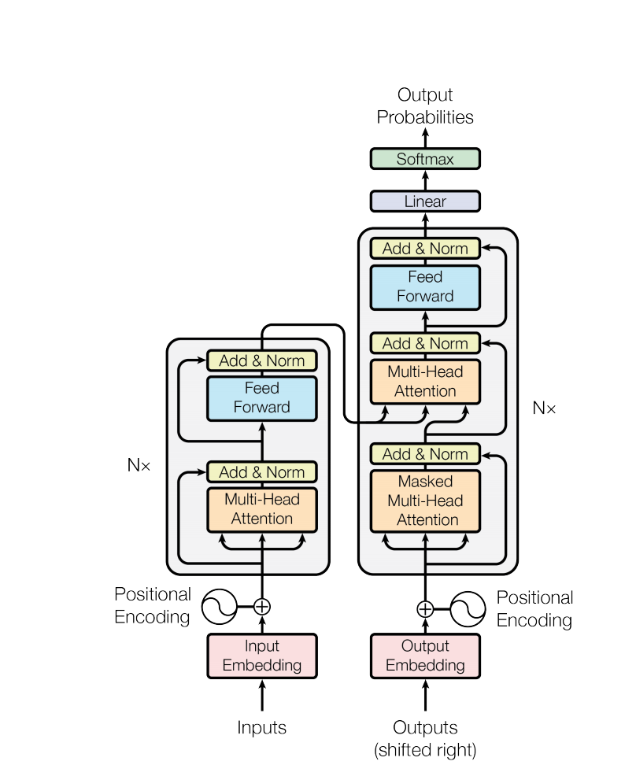
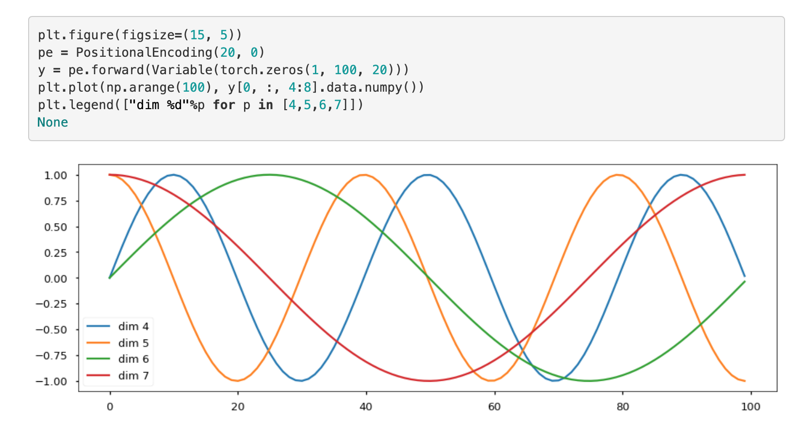
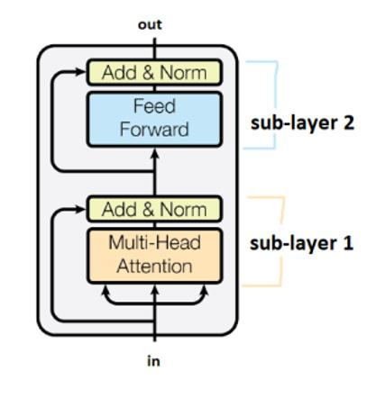
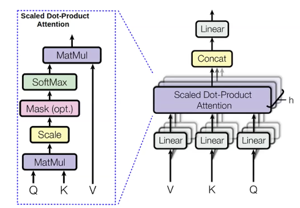
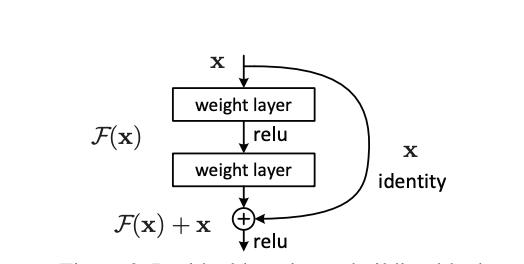
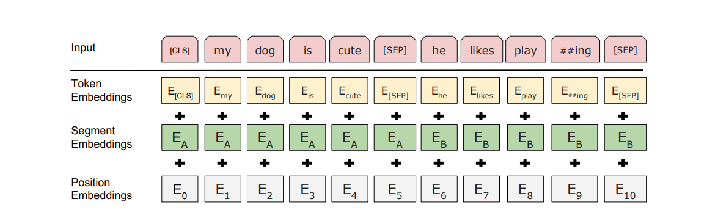

Eu lembro algum dia de 2016, quando eu estava no início da kinha carreira, eu encontrei por acaso o blog do Chirs McCormick sobre Word2Vec. Honestamente, acredito que o artigo escrito pelo Tomas Mikolov foi uma das indéias mais interessantes que eu já encontrei nessa minha jornada como cientista de dados {% fn 1 %} :)
{{ ‘Fun Fact: O perfil do LinkedIn do Miklov mostra que ele trabalhou na Microsoft, Google e Facebook; outro autor do W2V, Ilya Sutskever teve oportunidades de trabalhar com os maiores pesquisadores da área moderna de IA, tais como Geoffrey Hinton e Andrew Ng. Além disso, ele é um dos fundadores da Open AI!’ | fndetail: 1 }}
O que são Word Embeddings
Segundo a documentação do Pytorch, um Embedding pode ser definido da seguinte forma:
Uma tabela de lookup formada por um dicionário de tamanho fixo.
Podemos interpretar os embeddings como uma forma de converter índices em vetores de um tamanho específico. Logo, word embeddings, podem ser entendidos como palavras que são convertidas para inteiros e esses números servem de índices para diferentes linhas de uma matriz que representa o espaço vetorial.’
Eu escrevi um código usando manim que ilustra isso:
Podemos interpretar cada dimensão como um único neurônio de uma camada oculta, e, então, o tamanho desses embeddings podem ter seus números alterados a partir de uma rede neural. Essa é, basicamente, a ideia por trás de algoritmos como Word2Vec e fastText {% fn 2 %}
Já existem algumas bibliotecas que já fornecem alguns vetores pré-treinados. Por exemplo, considere o código Spacy abaixo:
{{ ‘Eu não irei cobrir Word2Vec nesse blog post. Se você não tem familiaridade com isso, consulte aqui; aqui e aqui. Infelizmente, todos os links estão em inglês. Se você achar quiser que eu escreva um post sobre Word2Vec em português, me envie uma mensagem no meu linkedin :)’ | fndetail: 2 }}
Code
import spacynlp = spacy.load("pt_core_news_sm")print("Considere a sentença 'O rato roeu a roupa do rei de Roma!'")text = nlp("O rato roeu a roupa do rei de Roma!")for word in text:print(f"'{word.text}' representação vetorial com tamanho {word.vector.shape[0]}. Seus primeiros 5 elementos são: {word.vector[:5].round(2)}" )
Considere a sentença 'O rato roeu a roupa do rei de Roma!'
'O' representação vetorial com tamanho 96. Seus primeiros 5 elementos são: [ 1.2 0.18 -0.97 -5.64 -4.65]
'rato' representação vetorial com tamanho 96. Seus primeiros 5 elementos são: [ 3.17 5.36 0.14 -1.27 3.09]
'roeu' representação vetorial com tamanho 96. Seus primeiros 5 elementos são: [ 1.17 -2.8 2.39 -0.33 0.4 ]
'a' representação vetorial com tamanho 96. Seus primeiros 5 elementos são: [-0.99 4.67 1.21 -3.48 -2.62]
'roupa' representação vetorial com tamanho 96. Seus primeiros 5 elementos são: [ 3.6 3.54 -0.66 -1.9 1.99]
'do' representação vetorial com tamanho 96. Seus primeiros 5 elementos são: [-3.28 -2.15 -1.62 4.33 0.55]
'rei' representação vetorial com tamanho 96. Seus primeiros 5 elementos são: [ 2.43 2.99 -2.72 2.31 5.31]
'de' representação vetorial com tamanho 96. Seus primeiros 5 elementos são: [-4.49 -1.73 2.27 7.9 3.35]
'Roma' representação vetorial com tamanho 96. Seus primeiros 5 elementos são: [ 4.87 0.42 1.91 -1.68 6.37]
'!' representação vetorial com tamanho 96. Seus primeiros 5 elementos são: [ 0.61 -3.03 -1.37 -0.38 -2.72]
Essas palavras são representações que foram treinadas com base nos dados do Common Crawl usando o algoritmo GloVe. Diferente do exemplo usado no começo deste blog, a palavra ‘!’ também teve uma representação vetorial.
Para formar frases, podemos combinar embeddings de palavras de formas diferentes. Segundo a documentação do spacy:
Modelos que possuem vetores de palavras estão disponíveis pelo atributo Token.vector. Doc.vector e Span.vector, por padrão são representados pela média da representação de seus vetores.
Logo, a frase que estamos usando como exemplo tem a seguinte representação vetorial:
Os primeiros 5 valores de 'The quick brown fox jumps over the lazy dog!!': [-0.23 0.08 -0.03 -0.07 -0.02]
Limitações dos Word Embeddings
Apesar de Word Embeddings trouxeram muitos benefícios na área de linguística computacional, eles possuem algumas limitações. Existe um fenômeno na linguística chamado polissemia. De acordo com o wikipedia:
É a propriedade que uma mesma palavra tem de apresentar vários significados. Exemplos: Ele ocupa um alto posto na empresa. / Abasteci meu carro no posto da esquina. / Os convites eram de graça. / Os fiéis agradecem a graça recebida.
Considerando o exemplo acima, mesmo que as palavras tenham significados diferentes por conta do contexto, sua representação vetorial é a mesma
Primeiros cinco valores da palavra 'posto': [ 2.23 0.89 1.63 1.8 -0.12]
Se pegarmos duas frases: Ele ocupa um alto posto na empresa e Abasteci meu carro no posto da esquina, então nós teremos os seguintes vetores:
text1 = nlp("Ele ocupa um alto posto na empresa")text2 = nlp("Abasteci meu carro no posto do alto do morro")print(f"Os primeiros 5 valores do vetor da sentença '{text1} ': {text1.vector[:5].round(2)}")print(f"Os primeiros 5 valores do vetor da sentença {text2} ': {text2.vector[:5].round(2)}")
Os primeiros 5 valores do vetor da sentença 'Ele ocupa um alto posto na empresa ': [ 0.55 1.04 0.21 -0.36 0.51]
Os primeiros 5 valores do vetor da sentença Abasteci meu carro no posto do alto do morro ': [ 0.73 0.82 -0.78 2.11 0.61]
Ao calcular a similaridade de cossenos entre a média destes vetores:
Code
from sklearn.metrics.pairwise import cosine_similarityprint(f"Similaridade:\n '{text1}' and '{text2}': "f"{cosine_similarity(text1.vector.reshape(1, -1),text2.vector.reshape(1, -1))[0][0]}")
Similaridade:
'Ele ocupa um alto posto na empresa' and 'Abasteci meu carro no posto do alto do morro': 0.5666443705558777
Isso indica que ambos os vetores tem alguma similares. Contudo, a razão disso foi o uso de palavras parecidas, uma vez que o significado das sentenças é completamente diferente.
Isso é algo que o BERT tenta resolver.{% fn 3 %}
{{ ‘Existem alguns percursores do BERT como o ELMo; ULMFit e Open AI Transformer que eu não irei cobrir aqui. Por favor, caso você queira, confira esse post aqui para saber mais’ | fndetail: 3 }}
BERT
Attention é tudo o que você precisa
O artigo Attention is all you need introduziu a chamada arquitetura Transformer, que pode ser resumida pela imagem abaixo:

A principal motivação por trás desse paper é que arquiteturas baseadas em RNN tem um custo computacional de memória caro. A proposta por trás dos Transformers, então, é que resultados similareas à uma RNN poderiam ser obtidos de uma forma muito mais eficiente aplicas, apenas, mecanismos de atenção (e evitando arquiteturas até então conhecidas, como CNN ou RNN) !{% fn 4 %} Apesar do fato de que a proposta original em torno dos Transformers é que eles resolveriam problemas de tradução, percebeu-se que apenas algumas variações em seu funcionamento seriam capazes de atingir resultados incríveis em outras áreas. Essa é, basicamente, a principal motivação por trás do modelo BERT!
{{ ‘O grupo de NLP de Harvard escreveu um blog post muito bom que explica o passo a passo desse paper, além de apresentar uma implementação do mesmo em pytorch. Se você tiver interesse de entender essa arquiteutra com mais detalhes, eu recomendo dar uma lida!’ | fndetail: 4 }}
Transformers são compostos por módulos de atenção, os quais podem ser entendidos como um mapeamento entre conjuntos (não sequências). Em outras palavras, nós não precisamos nos preocupar entre a relação de ordenação entre os valores de entrada e saída.
Ao analisarmos os mecanismos de atenção da arquitetura transformer, tanto o Multi-Head Attention quanto Multi-Head Masked Attention possuem 3 Arrow Heads. Cada uma dessas cabeças tem a seguinte representação:
Q Significa o vetor da query , com uma dimensão \(d_k\)
K Significa o vetor da chave (key), o qual também tem \(d_k\)
V Significa o vetor de value, com uma dimensão \(d_v\)
O par KV, no caso, são os inputs da rede, enquanto o Q é a saída de uma camada específica.
O armazenamento chave-valor (key-value) é um paradigma desenvolvido para armazenar (saving), recuperar (querying), e gerenciar arrays associativos (dictionaries/hash tables)
Por exemplo, considere que queremos fazer uma receita de lasanha. Nós temos a receita em um livro e , para encontrala, procuramos pela palavra lasanha, que seria a nossa query. Essa query é comparada contra todas as outras chaves possíveis. Estas, por sua vez, poderiam representar os títulos de todas as receitas no livro. Então, podemos checar aplicar um matching score entre todas as chaves em relação à query. Caso a saída desse score seja o argmax, podemos retornar apenas a receita (value) com o valor máximo. Se for a softmax, podemos retornar uma distribuição de probabilidades e, então, descobrir as receitas mais similares com a query ou as menos similares.
Warning
Eu decidi não cobrir os conceitos de atenção em grandes detalhes. Para quem quiser saber mais, eu fortemente recomendo o curso da NYU de Fundamentos de Deep Learning que eu já citei acima.
Note
De uma maneira genérica, um mecanismo de atenção pode ser entendido, basicamente, como uma medida de correção entre dois conjuntos de palavras. Para quem quer, realmente, estudar o assunto em profundidade, esse blog é excelente.
Uma vez que nosso modelo não contém recorrência ou convolução, para fazer com que o modelo aprenda alguma noção de sequência, nós precisamos injetar alguma informação sobre a posição absoluta ou relativa sobre as palavras (tokens) de uma certa sequência. Esses “encoding posicionais” são somados aos embeddings de entrada tanto na pilha de encoder, quanto na pilha de decoder. Por conta disso, o “encoding posicional” tem a mesma dimensão \(d_{model}\) que os embeddings (para que, então, eles possam ser somados).

O modelo BERT
O modelo BERT é, na prática, um modelo encoder, derivado da arquitetura transformer. Considerando os modelos treinados do paper, o modelo base consiste de 12 camadas encoder empilhados, enquanto o modelo large é composto de 24 camadas encoder empilhadas.
O encoder é composto por uma pilha de \(N = 6\) camadas. Cada camada é formada por dois sub-camada. A primeira sub-camada é um mecanismo multi-head self-attention, enquanto a segunda é uma rede fully connected feed-forward position wise . Nós aplicamos uma residual connection ao redor de cada uma das duas sub-camadas, seguido de uma camada de normalização.

The Multi-Head Attention
Basicamente, o mecanismo de atençção multi head é um tipo de mecanismo de atenção. Ele formado pela concatenação de outro mecanosmo, o produto interno (scaled dot). A representação de ambos mecanismos se dá pela imagem abaixo:

Note
A forma de calcular a atenção Scaled Dot-Product é dada por \(softmax(\frac{QK^T}{\sqrt{n}})V\), em que K, V and Q são os mesmos que os descritos na sessão antetior, enquanto n representa o número de elementos dentro do conjunto.
h, ou o número de camadas de atenção é igual a \(12\) no caso do \(\text{BERT}_\text{base}\), e \(16\) no caso do \(\text{BERT}_\text{large}\)
Conexões Residuais
Cada subcamada da pilha de encoder contém uma conexão resiudal (a flecha curvada à esquerda) adicionada à saída da subcamada anterior à camada de normalização. A idea de Conexões Residuais vem do campo de visão computacional e, na verdade, é uma técnica que pode ser resumida pela seguinte imagem:

Considerando a arquitetura de pilha Encoder, cada \(\mathcal{F}(x)\) significa ou a atenção Multi-Head ou a camada Feed Forward. Logo, citando o paper:
Ou seja, a saída de cada sub camada é LayerNorm(x + Sublayer(x)), onde cada Sublayer(x) é a função implementada pela subcamada em si. Para facilitar essas conexões individuais, todas as sub-camadas do modelo, assim como as camadas de embedding, produzem saídas de dimenção \(d_{model} = 512\) {% fn 5 %}.
{{ ‘No caso do BERT, tenha em mente que \(N\) pode ser \(12\) (BERTbase) ou \(24\) ((BERTlarge) e dmodel é 768 para o BERT base e 1024 para o BERT large’ | fndetail: 5 }}
Mas o que, de fato, está sendo encodado?
Representação dos Embeddings
Quando o paper foi escrito, os autores tinham em mente que o BERT deveria performar bem em diferentes tarefas, tais como binary e multi lablel classification_; language modeling; question and answering; named entity recognition; etc. Fazendo a paráfrase do original:
Nossa representação de entrada tem que, de maneira desambiguável, representar tanto uma sentença única, quanto um par de sentenças em uma única sequência de tokens. Diferente de uma sentença na linguística tradicional, no BERT, uma “sentença” pode ser um span arbitrário de texto contínuo. Uma “sequência” representa a sequência de tokens de entrada no BERT, o que pode ser uma sentença única ou duas sentenças agrupadas.
Para performar e criar esses embeddings de sentenças, utilizou-se o WordPiece. Então, além de adicionar o [CLS] token, pares de sentença (e.g. sentence A and B) são concatenados em uma sentença única, sendo separados por um token especial [SEP] (e.g. A [SEP] B).
Então:
Para um dado token, sua representação é construída ao somar o token respectivo, o segmento (A ou B) e os positional embeddings.

Pré Treinamento do BERT
A primeira parte do BERT é um processo de pé treinamento que tem duas funções objetivo
Modelo de Linguagem Mascarado (MLM)
Conforme estamos alimentando o modelo com sentenças e considerando que estamos treinando um modelo de linguagem (isto é, queremos prever a palavra seguinte dado as palavras anteriores), como o BERT é bidirecional, isso acaba sendo problemático. A solução, proposta por essa loss function é relativamente simples. Para fraseando o paper:
Infelizmente, modelos de linguagem convencionais são apenas treinados considerando como input sentenças da esquerda para direita ou direita para esquerda, já que condicionalidade bidirecional permitiria que cada palavra “tivesse acesso a ela mesma” e, logo, o modelo conseguiria fazer a previsão de uma maneira direta.
Para treinar uma representação bidirecional, nós mascaramos, de forma aleatória, uma certa porcentagem da entrada e prevismos estes tokens que forem ocultados. Nos referimos a esse processo como modelo de linguagem mascarado, apesar de que ele também recebe o nome de cloze task na literatura.
No caso do BERT, 15% de cada sentença é mascarada durante a etapa de treinamento.
Predição da Próxima Sentença (Next Sentence Prediction- NSP)
Para aprender relações entre pares de sentença (i.e. tarefas de perguntas e respostas), os autores precisaram pensar em algo além da modelagem de língua tradicional. Então:
Para treinar um modelo que entenda relacionamento de sentenças, nós pre treinamos um modelo binarizado previsor de próxima sentença que poderia ser gerado de qualquer corpus monolingual. Especificamente, quando escolhemos sentenças A e B para cada exemplo de pré treino, 50% das vezes B é, de fato, a sentença seguinte de A (marcada como IsNext) e 50% das vezes é uma sequência aleatória (marcada como NotNext).
Ambas funções objetivo (MLM e NSP) são usadas para o pré treinamento do BERT :)
Note
A loss de treinamento é a soma das médias da MLM e NSP
Important
Você deve ter notado que, durante o treinamento, não é necessário o uso de labels, já que derivamos labels a partir do input. Logo, o modelo de Pré Treinamento do BERT é considerado self-surpervised!
Resumão de tudo
Como estamos lidando com embeddings de sentenças (não palavras), precisamos de uma forma de fazer o encoding desse input da maneira certa. Vamos ver como o BERT faz:
Primeiro recebemos os tokens de texto como entrada
Aplicamos o WordPiece Tokenizer
Essa entrada entra na pilha de Encoder
Treinamos a rede (Pre-Training step)
Para os familiarizados com redes convolucionais, podemos dizer que o embedding do token [CLS] funciona como uma representação “pooled” (ref) da sentença e, logo, pode ser usada como um embedding contextual. No caso, ela serve de entrada para uma rede neural para resolver problemas de classificação!
Dependendo da tarefa de Fine tuning, é possível usar os embeddings de um token diferente do CLS
Important: Se desconsiderarmos a tarefa de fine tuning, o vetor CLS não tem uma representação muito grande, uma vez que ele foi treinado por meio da loss NSP (ref)
Eu tentei resumir o processo todo com o gif abaixo
Na prática
Para mostrar o embedding de sentenças do BERT funcionando, eu irei usar a biblioteca Hugging Face’s transformer. Aqui, uma vez que o Bert Model para Modelos de Linguagem já foi treinado, Eu usarei o BERT sem nenhuma cabeça (i.g., LanguageModeling head or SentenceClassification head) na ponta!
sequence_0 ="Ele ocupa um alto posto na empresa"sequence_1 ="Abasteci meu carro no posto do alto do morro"
Code
sequence_0_w2id = tokenizer.encode(sequence_0) # we need to map words to id's :)sequence_1_w2id = tokenizer.encode(sequence_1)print(f"Mapeamento de sequencia 0 word2Id: {sequence_0_w2id}")print(f"Mapeamento de sequence 1 word2Id: {sequence_1_w2id}")
Podemos ver que esse modelo gera um embedding para cada palavra das frases mais dois: um para o token CLS e outro para o token SEP
Agora, vamos calcular a similaridade entre o token CLS e a média dos tokens que compõe a frase:
Code
CLS_TOKEN_0 = sequence_0_embeddings[0]CLS_TOKEN_WORDS_0 = np.mean(sequence_0_embeddings[[1, 2, 3, 4]], axis=0)print(f"Similaridade de Cosseno entre o token CLS e a média dos tokens de\n'{sequence_0}'"f" tokens: {cosine_similarity(CLS_TOKEN_0.reshape(1, -1), CLS_TOKEN_WORDS_0.reshape(1, -1))[0][0]}")
Similaridade de Cosseno entre o token CLS e a média dos tokens de
'Ele ocupa um alto posto na empresa' tokens: -0.04759013652801514
Code
CLS_TOKEN_1 = sequence_1_embeddings[0]CLS_TOKEN_WORDS_1 = np.mean(sequence_1_embeddings[[1, 2, 3, 4]], axis=0)print(f"Similaridade de Cosseno entre o token CLS e a média dos tokens de\n'{sequence_1}'"f" tokens: {cosine_similarity(CLS_TOKEN_1.reshape(1, -1), CLS_TOKEN_WORDS_1.reshape(1, -1))[0][0]}")
Similaridade de Cosseno entre o token CLS e a média dos tokens de
'Abasteci meu carro no posto do alto do morro' tokens: 0.05738348513841629
Como dito pelo paper, o token CLS não tem significado nenhum aqui, Vamos, então, analisar a similaridade entre as médias dos tokens de ambas as sentenças
Similaridade de Cosseno entre o token CLS e a média dos tokens de
'Ele ocupa um alto posto na empresa'and 'Abasteci meu carro no posto do alto do morro' tokens :0.5034023523330688
Como esperado, apesar de palavras parecidas terem sido usadas, ccomo o contexto entre palavras foram totalmente disferentes, a similaridade de embeddings aqui foi menor do que o de combinação de palavras, usado no começo do artigo.
Conclusion
Parabéns! Você aprendeu os principais conceitos por trás do modelo BERT :) Se você tiver interesse em ver outros posts em português, por favor me envie uma mensagem!
Além disso, se você quer ter mais detalhes de como usar o BERT de uma maneira prática, eu recomendo esse blog post!
Recursos que me inspiraram
Além dos papers que eu usei para citar nesse post, eu também gostaria de enfatizar que os links abaixo serviram de uma inspiração absurda!
 e M é 4.")